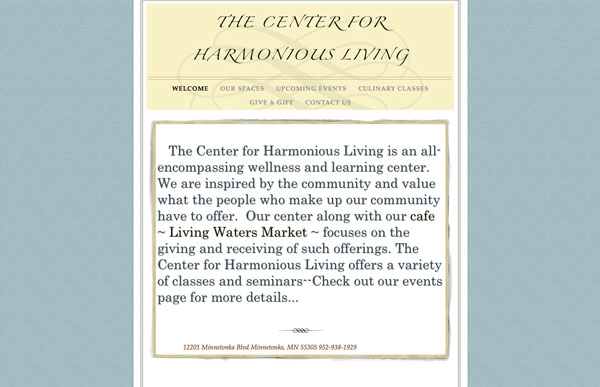
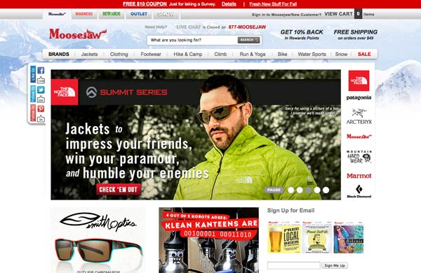

When one searches for the Minnetonka Living Waters Cafe website, you are brought to their site The Center for Harmonious Living. Beyond the Cafe they offer an all encompassing wellness and learning center. As I am a huge fan of their pizza and salads, when trying to find their menu online, I was very disappointed with their website. Their home page has clickable links that just lead you right back to the main page. All of their sub-pages feature a variety of different typefaces and color schemes. Most importantly I never could locate the menu! This company could really use an update to make it easier for people to find out about their wonderful food.

MooseJaw has a very similar layout as REI however they make certain design decisions that make the site feel overwhelming and cluttered. Whereas REI uses a simple white background, MooseJaw has a mountain background. There is quite a bit more type found on MooseJaw and the images chosen are very content heavy. This makes it hard to determine where to look first and what has more importance than the other items on the page.